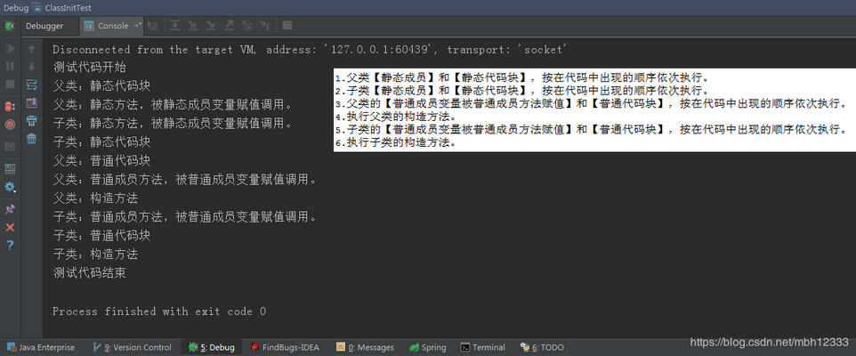

子类继承父类的代码可分为：静态代码块，普通代码块，静态方法，静态成员变量，普通成员变量，普通方法。
转载：Java类的各种成员初始化顺序如：父子类继承时的静态代码块,普通代码块,静态方法,构造方法,等先后顺序
Java类的各种成员的初始化顺序：
- 父类【静态成员】和【静态代码块】，按在代码中出现的顺序依次执行。
- 子类【静态成员】和【静态代码块】，按在代码中出现的顺序依次执行。
- 父类的【普通成员变量被普通成员方法赋值】和【普通代码块】，按在代码中出现的顺序依次执行。
- 执行父类的构造方法。
- 子类的【普通成员变量被普通成员方法赋值】和【普通代码块】，按在代码中出现的顺序依次执行。
- 执行子类的构造方法。
测试代码：
父类：
package com.lxk.ClassInitTest;
/**
* 父类
* <p>
* Created by lxk on 2017/4/20
*/
public class Parent {
static {
System.out.println("父类：静态代码块");
}
{
System.out.println("父类：构造代码块");
}
private static String staticStringInParent = initStaticStringInParent();
private String stringInParent = initStringInParent();
public Parent() {
System.out.println("父类：构造方法");
}
private static String initStaticStringInParent() {
System.out.println("父类：静态方法，被静态成员变量赋值调用。");
return "initStaticStringInParent";
}
private String initStringInParent() {
System.out.println("父类：普通成员方法，被普通成员变量赋值调用。");
return "initStringInParent";
}
}子类
package com.lxk.ClassInitTest;
/**
* 子类
* <p>
* Created by lxk on 2017/4/20
*/
public class Child extends Parent {
private String stringInChild = initStringInChild();
private static String staticStringInChild = initStaticStringInChild();
{
System.out.println("子类：构造代码块");
}
static {
System.out.println("子类：静态代码块");
}
public Child() {
System.out.println("子类：构造方法");
}
private static String initStaticStringInChild() {
System.out.println("子类：静态方法，被静态成员变量赋值调用。");
return "initStaticStringInChild";
}
private String initStringInChild() {
System.out.println("子类：普通成员方法，被普通成员变量赋值调用。");
return "initStringInChild";
}
}main方法
package com.lxk.ClassInitTest;
/**
* 测试Java类的成员和初始化块（代码块）初始化顺序
* <p>
* Created by lxk on 2017/4/20
*/
public class ClassInitTest {
public static void main(String[] args) {
System.out.println("测试代码开始");
new Child();
System.out.println("测试代码结束");
}
}执行结果

普通代码块：
在方法或语句中出现的{}就称为普通代码块。
普通代码块和一般的语句执行顺序由他们在代码中出现的次序决定–“先出现先执行”静态代码块:
在java中使用static关键字声明的代码块。
静态块用于初始化类，为类的属性初始化。每个静态代码块只会执行一次。
由于JVM在加载类时会执行静态代码块，所以静态代码块先于主方法执行。
如果类中包含多个静态代码块，那么将按照”先定义的代码先执行，后定义的代码后执行”。
注意：
- 静态代码块不能存在于任何方法体内。
- 静态代码块不能直接访问静态实例变量和实例方法，需要通过类的实例对象来访问。
构造代码块：
直接在类中定义且没有加static关键字的代码块称为{}构造代码块。
构造代码块在创建对象时被调用，每次创建对象都会被调用，并且构造代码块的执行次序优先于类构造函数。
这个构造代码块的执行顺序不会因为方法所在位置而影响，我特意将他放在构造函数之后。